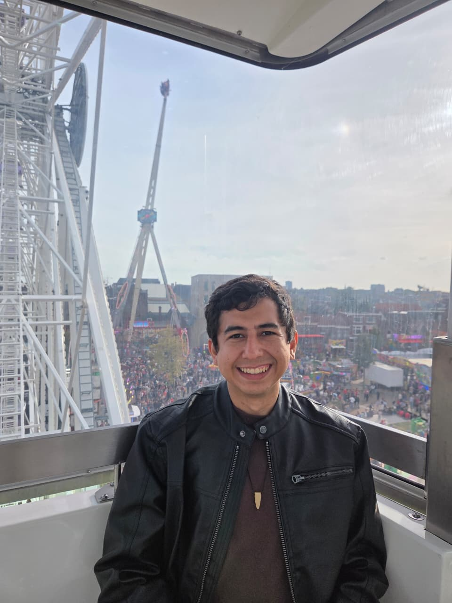

Finanzas Claras
A personal project you can explore online.

Software engineer · Colombia → the Netherlands
Hi, I’m Fabio, a software engineer from Colombia living in the Netherlands. I like solving problems, and programming has been part of my life since high school.
I started coding in 2014 and working professionally in 2020. Along the way, I participated in several ICPC contests, where I spent a lot of time thinking through problems and finding ways to solve them.
I’m a Lead Software Engineer at Wolters Kluwer, working on UpToDate Expert AI.
I work closely with physicians to explore what AI can do for healthcare and push the boundaries of what we can build together.
A couple of projects I’m proud of:
A personal project you can explore online.
Another personal project I’m working on. More to share when it’s ready.
I really enjoy cooking. I’m constantly trying new techniques and working on my touch in the kitchen.
You can reach me by email or find my work on GitHub.